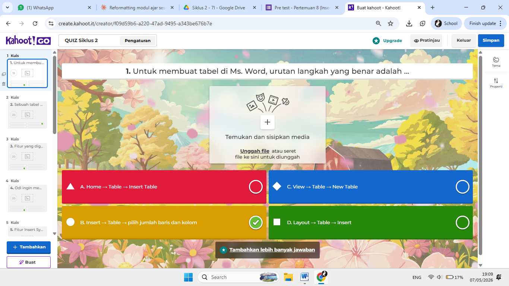
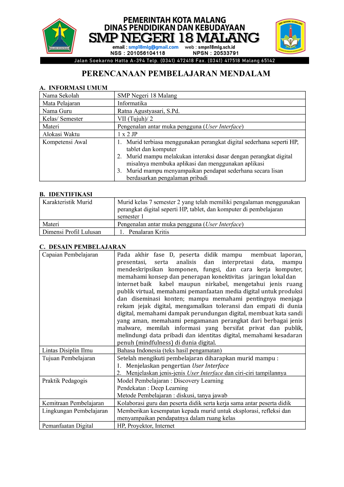
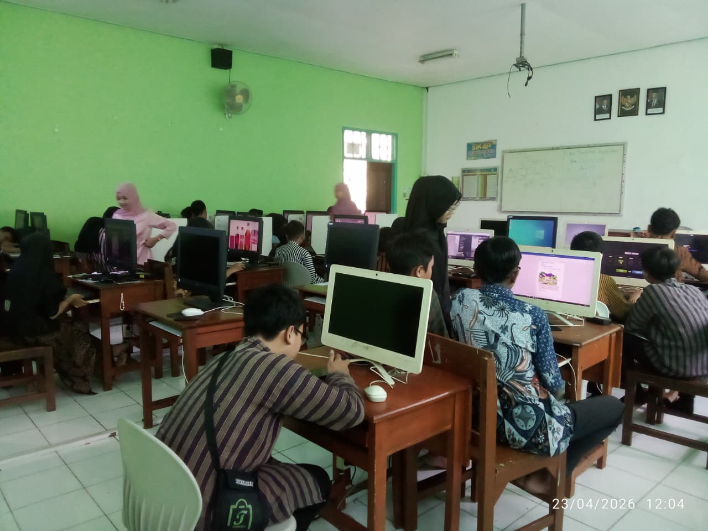
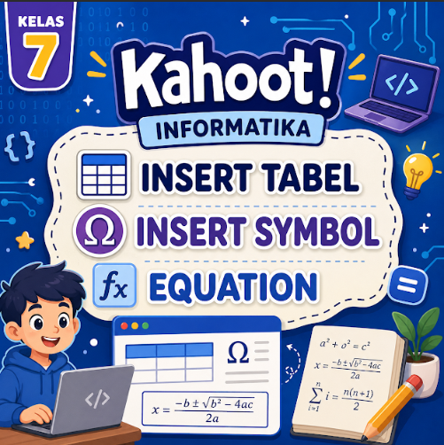
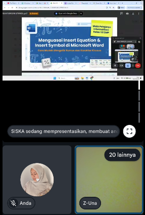
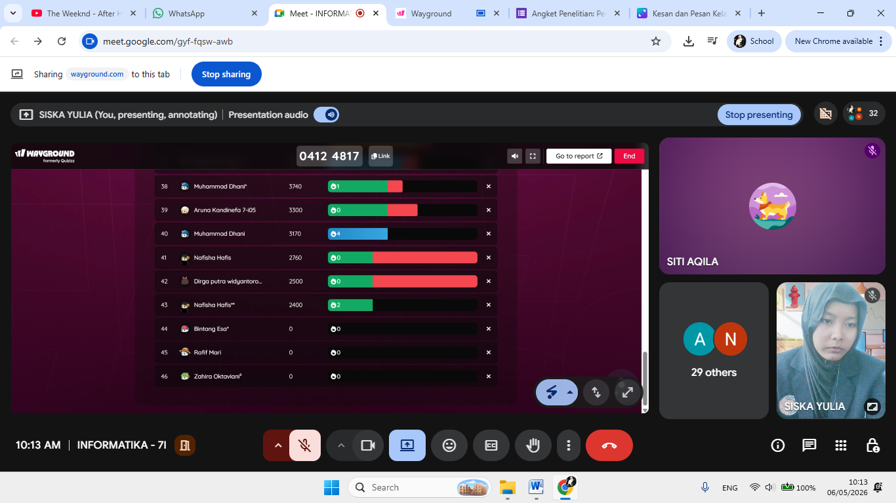

TOPIK 1
Topik 1
Deskripsi pembelajaran, artefak, dan refleksi PPL Mandiri Topik 1.
Lihat dokumentasi →📚 SEMESTER 2 • PPL MANDIRI
Dokumentasi pelaksanaan Praktik Pengalaman Lapangan (PPL) Mandiri selama Semester 2. Dokumentasi disusun dalam empat siklus pembelajaran yang meliputi perangkat pembelajaran, hasil kerja, media pembelajaran, dan penilaian.
PENDAHULUAN PPL
Dokumentasi konteks sekolah, kondisi kelas, tujuan, Lesson Study, dan pelaksanaan PPL Mandiri.
Mata kuliah Praktik Pengalaman Lapangan (PPL) Mandiri bertujuan mengembangkan kemampuan mahasiswa PPG sebagai calon guru profesional melalui pengalaman nyata di lingkungan sekolah. Dalam kegiatan ini, mahasiswa dilatih untuk mampu merancang, melaksanakan, mengevaluasi, dan merefleksikan pembelajaran secara mandiri dengan memperhatikan kebutuhan, karakteristik, dan keberagaman peserta didik. PPL Mandiri mencakup beberapa tahapan, yaitu orientasi, observasi, pembelajaran mandiri, kegiatan nonmengajar, dan refleksi akhir. Pelaksanaannya terintegrasi dengan mata kuliah Pembelajaran Mendalam dan Asesmen Lanjut (PMA Lanjut) serta Pembelajaran Sosial Emosional (PSE). Melalui PPL Mandiri, mahasiswa diharapkan mampu menjadi guru yang profesional, reflektif, adaptif, mandiri, bertanggung jawab, dan mampu menciptakan pembelajaran yang kontekstual, bermakna, serta berpihak pada peserta didik.
TOPIK PEMBELAJARAN
Dokumentasi PPL Mandiri disusun dalam lima topik seperti struktur laman mata kuliah.
TOPIK 1
Deskripsi pembelajaran, artefak, dan refleksi PPL Mandiri Topik 1.
Lihat dokumentasi →TOPIK 2
Deskripsi pembelajaran, artefak, dan refleksi PPL Mandiri Topik 2.
Lihat dokumentasi →TOPIK 3
Deskripsi pembelajaran, artefak, dan refleksi PPL Mandiri Topik 3.
Lihat dokumentasi →TOPIK 4
Deskripsi pembelajaran, artefak, dan refleksi PPL Mandiri Topik 4.
Lihat dokumentasi →TOPIK 5
Deskripsi pembelajaran, artefak, dan refleksi PPL Mandiri Topik 5.
Lihat dokumentasi →LESSON STUDY
Dokumentasi pelaksanaan PPL Mandiri pada Siklus 1.
Lihat Lesson StudyDokumentasi pelaksanaan PPL Mandiri pada Siklus 2.
Lihat Lesson Study4 SIKLUS PPL
Lengkapi setiap siklus dengan target, pelaksanaan, dan evaluasi.
Isi dokumentasi pelaksanaan dan hasil siklus 1 di sini.
Buka Siklus 1Isi dokumentasi pelaksanaan dan hasil siklus 2 di sini.
Buka Siklus 2Isi dokumentasi pelaksanaan dan hasil siklus 3 di sini.
Buka Siklus 3Isi dokumentasi pelaksanaan dan hasil siklus 4 di sini.
Buka Siklus 4DOKUMENTASI FOTO
Dokumentasi visual kegiatan dan perangkat pembelajaran PPL Mandiri.






NAVIGASI